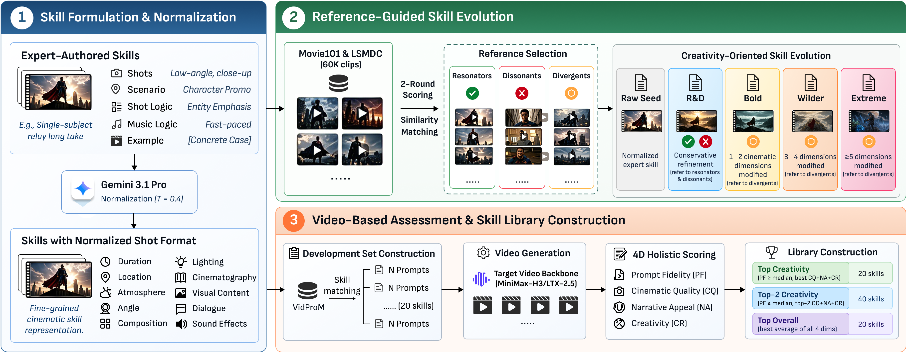

Give each shot a job.
Skills describe shot order, duration, setting, composition, lighting, movement, action, dialogue, and sound.
Cinematic prompt engineering
SkillPE turns filmmaking craft into reusable skills for text-to-video. It learns from movie references to shape camera, light, action, and story, while keeping the user's idea in frame.
UP TO+1.40POINTS
on a 7-point cinematic evaluation over the strongest non-skill prompt-engineering baseline
01 The method
Rather than polishing words in isolation, SkillPE builds a library of cinematic strategies, evolves them with reference films, and keeps the versions that work on screen.

Skills describe shot order, duration, setting, composition, lighting, movement, action, dialogue, and sound.
Resonators refine a skill, dissonants define its boundaries, and divergents spark controlled alternatives.
Candidate skills are compared through generated clips for fidelity, cinematic quality, narrative appeal, and creativity.
02 Generated examples
Compare the original generation, a seed-skill rewrite, and the evolved SkillPE library. Press play to watch each result.
CASE 01 TRANSFORMATION
“A car transforms into a robot, waves to passersby, and then changes back into a car.”
CASE 02 VISUAL METAMORPHOSIS
“A man opens a book and then some fishes swim out of the pages.”
03 The evidence
In a blinded human study, the best evolved SkillPE library improved the overall score over both direct rewriting and seed skills.
400 videos · 40 prompts · 10 annotators · 7-point Likert scale
Creativity, with intent